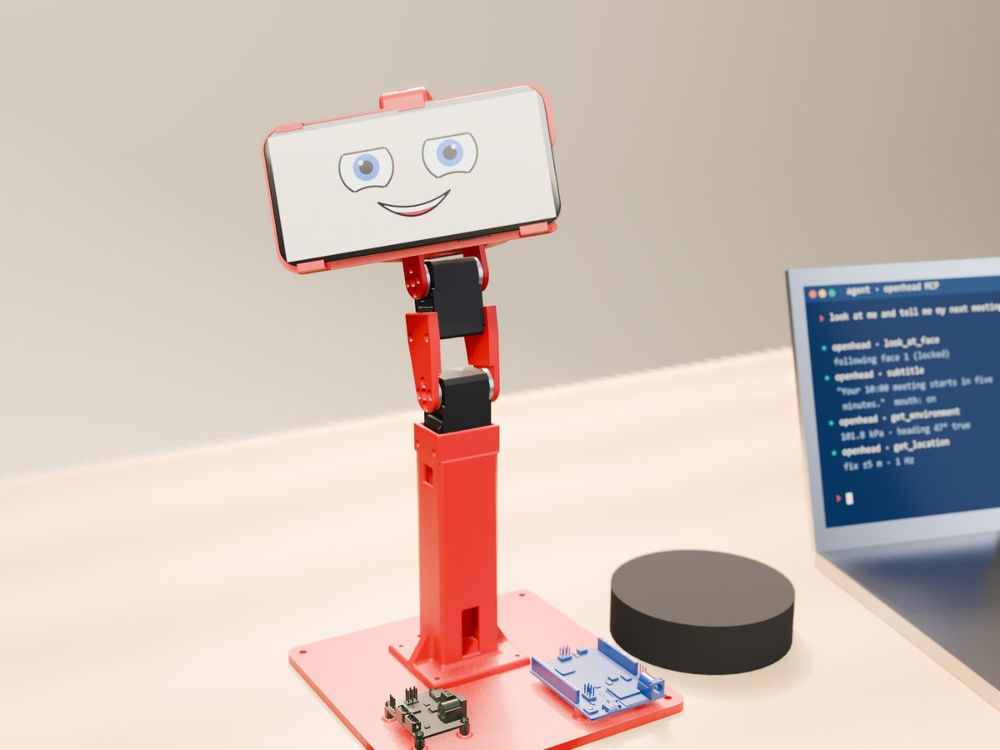
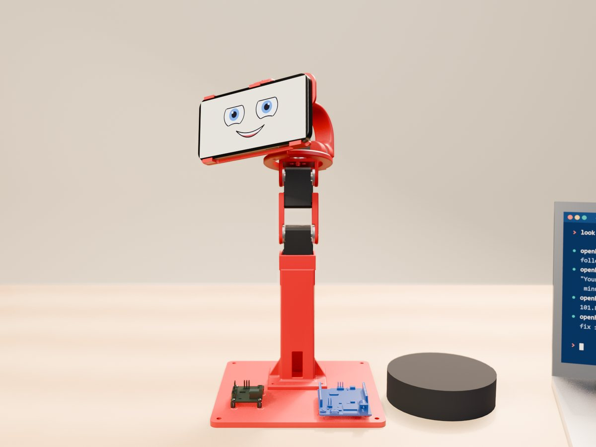
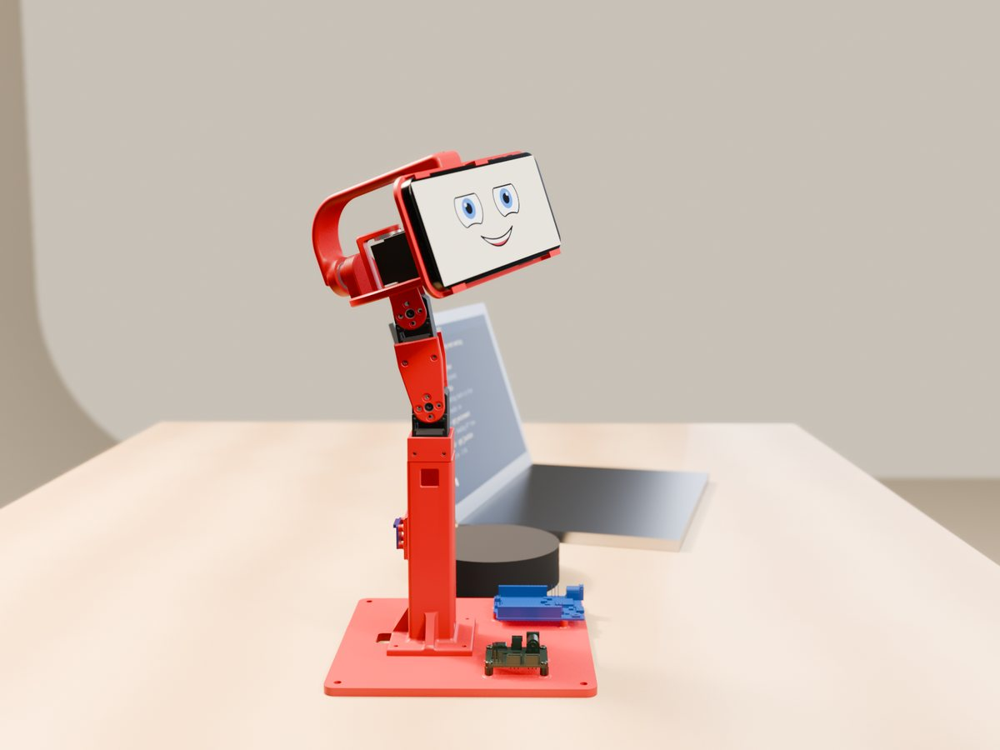
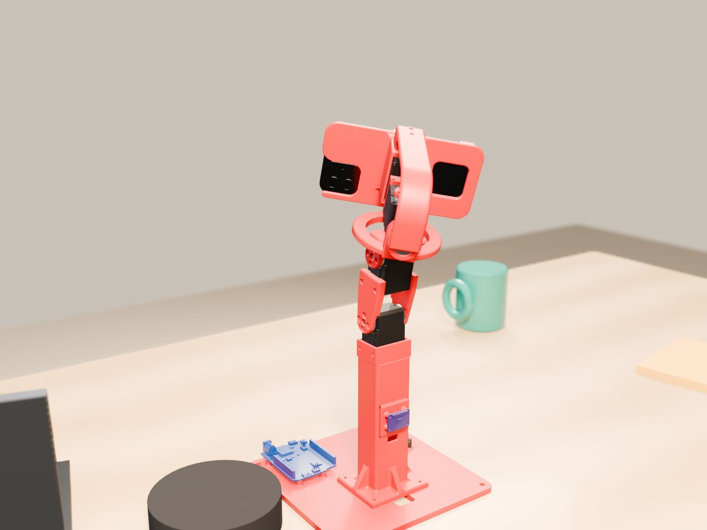

Open hardware · Open source
A neck for your robot's face.
An iPhone running OpenHead on a four-servo neck: a desk AI assistant that turns to look at you, nods, shakes its head and follows you with its eyes. Printed parts, Arduino firmware, Python and an MCP server.
The neck is Open Duck Mini v2's, printed from Open Duck's own files and adapted to hold a phone.

A desk AI assistant
A 3D render of the rig: it follows your face, talks, maps the room with the back camera while the front camera watches you, and streams every sensor to your agent. Video of the real rig comes next.
What it does
The phone is the face and the senses (that is OpenHead); this is the body that moves it.
Looks at you
The phone's front camera finds your face; the neck turns so you stay in the middle while the eyes on screen follow you.
Nods and shakes
Yes, no, a curious tilt, or look anywhere: yaw ±100°, pitch −20…+35°, roll ±25°, with smooth minimum-jerk moves.
AI agent ready
Two MCP servers side by side: openhead for the face and sensors, openhead-body for the neck.
Safe by default
The Uno lets the servos go when commands stop for 150 ms, starts from where they are, limits each step and has an emergency stop.
Open Duck's neck
Four Feetech STS3215 in Open Duck Mini v2's neck, with a new phone holder, a tower and a base for the electronics.
Try it without hardware
A simulated Uno with four servos runs the same code: openhead-body --port fake look 30 10.
Parts
Everything besides the printed parts and the phone.
| Qty | Part | Notes |
|---|---|---|
| 4 | Feetech STS3215 serial bus servo | The SO-101 follower arm's servo (7.4 V, 1/345); 1/191 or 1/147 also work in the neck |
| 1 | Arduino Uno R4 WiFi | Drives the servo bus; USB to the computer |
| 1 | Waveshare Bus Servo Adapter (A) | Serial servo board, jumper in mode B |
| 1 | Adafruit BNO085 IMU | On the tower as the body's reference; Qwiic to the Uno |
| 1 | iPhone 12 or newer | Runs OpenHead, mounted in landscape |
| 1 | Ball bearing 608ZZ | Rear support of the roll axis |
| 1 | Power supply 7.4 V, 3 A+ | Plus a 470–1000 µF capacitor and a fuse |
| – | Screws M2 × 8, M3 × 12–16, M3 × 6, M2.5 × 6 | Full list in the README |
| 1 | Speaker (optional) | Bluetooth to the phone |
Printing
STL and STEP files in hardware/print, plus the whole rig as one STEP assembly. About 250 g of PLA.



| Part | Source | Notes |
|---|---|---|
| base, tower, phone holder, rear arch | new | The stand, the phone frame with the roll servo's cage, the arch with the 608ZZ seat |
| head_yaw_to_roll_bearing | Open Duck, changed | A printed Ø7.9 pin for the bearing; 4–5 walls, 100 % infill around it |
| neck sheets, head_pitch_to_yaw | Open Duck, unchanged | Open Duck Mini v2's own files |
| TPU corners, rear pad, foot pad | new, optional | Bumpers for the phone and a non-slip foot |
| zero jig | tool | Sets the neck-pitch zero during calibration |
Software
Firmware for the Uno R4 WiFi and a Python package with a CLI, a library and an MCP server.
# wiring: Uno pins 0/1 to the Waveshare adapter (mode B), BNO085 on Qwiic, 7.4 V to the adapter arduino-cli compile --fqbn arduino:renesas_uno:unor4wifi -u -p COM5 firmware/body_uno cd python && uv sync uv run openhead-body --port fake look 30 10 # no hardware: a simulated Uno uv run openhead-body look 30 10 # yaw, pitch (roll) in degrees uv run openhead-body nod # nod | shake | tilt | home | relax uv run openhead-body follow --phone 192.168.1.20 # turn towards the person the phone sees
+yaw turns to the head's left, +pitch looks up: the same convention as OpenHead's faces stream, so a face's bearing is the yaw to turn. Servo setup and calibration: openhead-body-bench and openhead-body-calib.
Use it from an AI agent
Run both MCP servers: OpenHead's for the face, cameras and sensors, this one for the neck. Pair the phone once with openhead pair.
claude mcp add openhead --scope user -- uvx --from "openhead[mcp] @ git+https://github.com/PatrikBichis/openhead@v0.3.0#subdirectory=python" openhead mcp --device 192.168.1.20 claude mcp add openhead-body --scope user -- uvx --from "git+https://github.com/PatrikBichis/openhead-desktop-body#subdirectory=python" openhead-body --phone 192.168.1.20 mcp
look(yaw, pitch, roll): point the headgesture(nod | shake | tilt),home(),relax()follow_face(on): turn towards the person the phone seesstatus(): pose, joint angles, servo load, bus voltage
Then ask: “Look at me, and nod if you can see me.” Other agents (Claude Desktop, Codex, Cursor, Gemini, VS Code): README.
Built on Open Duck Mini
The neck design, its printed parts, servo positions and joint limits are Open Duck Mini v2's, by Antoine Pirrone and contributors (Apache 2.0). The phone holder, tower, base and rear arch are new. The servo and adapter models come from SO-ARM100 (Apache 2.0).
Status: the rig is printed and assembled. The firmware and tools are tested against a simulated Uno; joint directions, zeros and the IMU axes are checked on the real rig next.